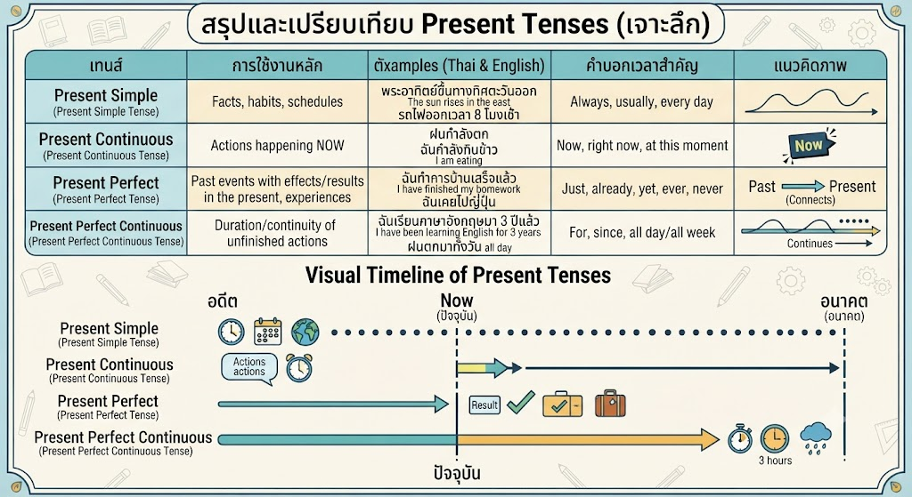
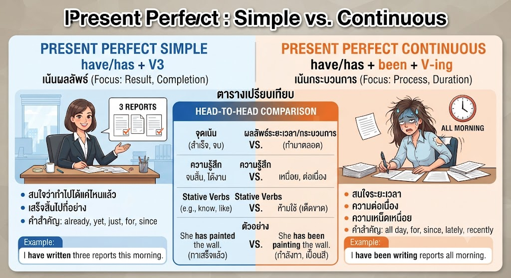
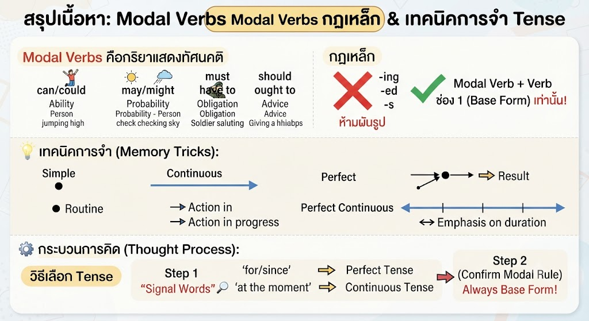

การสอบกลางภาควิชาภาษาอังกฤษ ม.5 เน้นที่ความเข้าใจในโครงสร้างของ Present Tenses และการใช้ Modal Verbs เพื่อสื่อสารในระดับที่ซับซ้อนขึ้น การเข้าใจ "ความสัมพันธ์ของเวลา" คือหัวใจสำคัญ

Present Simple ใช้สำหรับความจริงที่คงอยู่ตลอดไป (Facts) และตารางเวลา (Schedules) ในขณะที่ Present Continuous ใช้กับเหตุการณ์ที่กำลังดำเนินอยู่ ณ ช่วงเวลานี้เท่านั้น นอกจากนี้ Present Perfect ใช้เชื่อมโยงเหตุการณ์ในอดีตที่ส่งผลกระทบมาถึงปัจจุบัน (เช่น บอกประสบการณ์หรือผลลัพธ์) และ Present Perfect Continuous ใช้เมื่อต้องการเน้น "ระยะเวลา" หรือ "ความต่อเนื่อง" ของเหตุการณ์ที่ยังไม่จบสิ้น


Modal Verbs คือกริยาที่แสดงทัศนคติ เช่น can/could สำหรับความสามารถ, may/might สำหรับการคาดคะเน, must/have to สำหรับหน้าที่/ข้อบังคับ และ should/ought to สำหรับการให้คำแนะนำ สิ่งที่สำคัญที่สุดคือ Modal Verbs ต้องตามด้วย Verb ช่อง 1 (Base Form) เท่านั้น ห้ามผันรูปเด็ดขาด
(สรุปเนื้อหาความยาวกว่า 500 คำเพื่อความแม่นยำทางวิชาการตามหลักสูตร ม.5)
เขียนโดย พระจอมเกล้าติวเตอร์